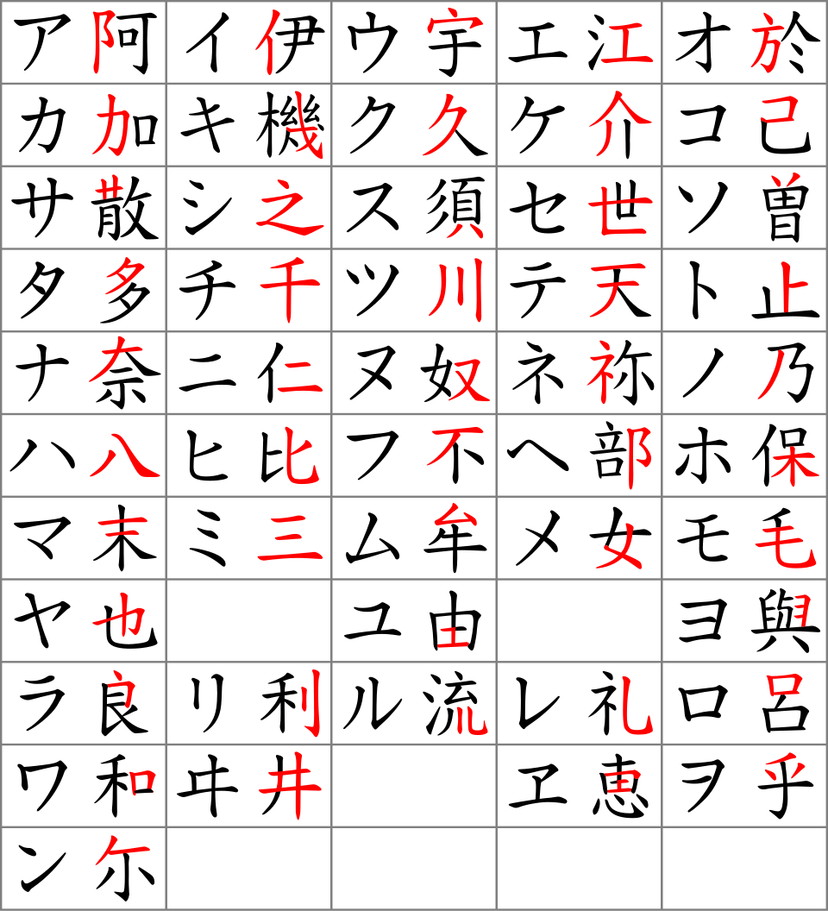
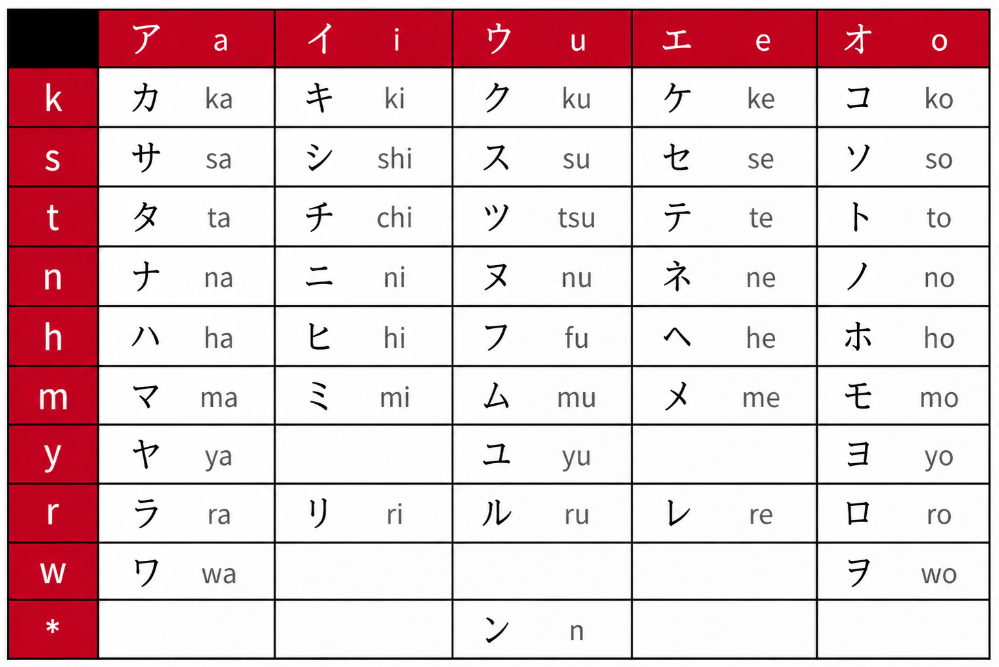
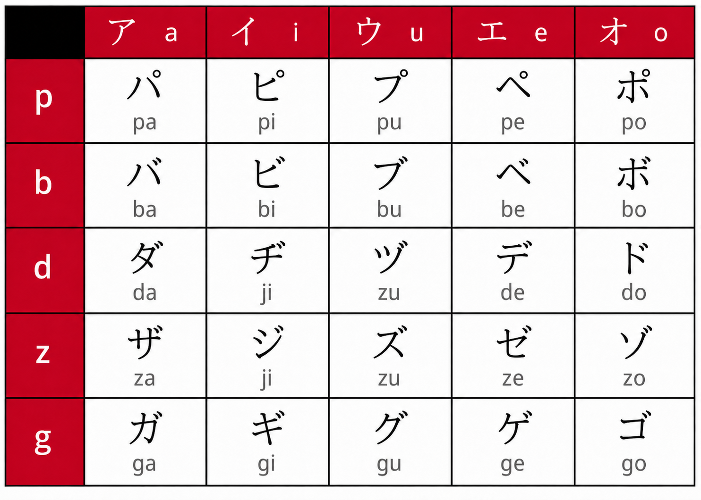

Katakana (片仮名 oder カタカナ) ist eine der drei japanischen
Schriftarten und bildet neben Hiragana die zweite japanische
Silbenschrift. Sie entstand ebenfalls etwa im 9. Jahrhundert
während der Heian-Zeit, jedoch auf andere Weise als Hiragana:
Während Hiragana aus stark vereinfachten kursiven Kanji hervorging,
entwickelte sich Katakana aus einzelnen Bestandteilen von
Kanji-Zeichen. Diese wurden gezielt herausgelöst und vereinfacht,
um eine kompaktere und schneller schreibbare Lautschrift zu
schaffen.
Die Entstehung von Katakana wird vor allem buddhistischen Mönchen
zugeschrieben. Sie nutzten diese vereinfachten Zeichen als
Lesehilfen beim Studium chinesischer buddhistischer Texte. Da
klassische chinesische Schriftzeichen für die japanische Grammatik
nur eingeschränkt geeignet waren, dienten die neuen Zeichen
zunächst dazu, Aussprache und Grammatik zu markieren. Aus diesen
Notationshilfen entwickelte sich schließlich das eigenständige
Katakana-System.
Im Gegensatz zu Hiragana, das sich eher im privaten und
literarischen Bereich verbreitete, wurde Katakana lange Zeit
hauptsächlich in offiziellen, wissenschaftlichen und religiösen
Kontexten verwendet. Durch seine geradlinige und kantige Form
wirkt Katakana optisch deutlich markanter als das weichere
Hiragana. Der Name Katakana (片仮名) bedeutet wörtlich
„fragmentarische Kana“, was auf seine Entstehung aus Teilen
bestehender Kanji verweist.
Wie Hiragana gehört auch Katakana zu den Silbenschriften
(Syllabograms), da jedes Zeichen in der Regel einem Laut bzw.
einer Silbe der japanischen Sprache entspricht.
Beide Schriftsysteme besitzen dieselben Lautwerte – der
Unterschied liegt also nicht in der Aussprache, sondern in ihrer
Verwendung. Heute wird Katakana vor allem für Fremdwörter und
Lehnwörter verwendet, zum Beispiel コンピュータ (konpyūta,
„Computer“) oder アイスクリーム (aisukurīmu, „Eiscreme“). Außerdem
schreibt man mit Katakana häufig ausländische Namen, Firmennamen,
wissenschaftliche Begriffe, Tier- und Pflanzennamen sowie
Lautmalereien (Onomatopoesie) wie ドキドキ
(dokidoki, „Herzklopfen“). In Texten dient Katakana außerdem oft
zur Hervorhebung, ähnlich wie im Deutschen die Verwendung von
Kursivschrift oder Großbuchstaben. Dadurch ist Katakana ein
unverzichtbarer Bestandteil des modernen japanischen Schriftsystems.
Katakana
片仮名 oder カタカナ


Die Katakana-Tabelle ist nach einem einfachen Prinzip aufgebaut: Die linke
Spalte zeigt die Konsonanten, die obere Zeile die Vokale (a, i, u, e, o).
Kombiniert man beides, entsteht eine Silbe – zum Beispiel k + a = ka (カ)
oder m + i = mi (ミ). Da Katakana eine Silbenschrift ist, steht jedes
Zeichen für genau eine Silbe.
Die daneben stehenden lateinischen Buchstaben nennt man Rōmaji. Sie dienen
nur als Annäherung an die japanische Aussprache, da das Japanische
ursprünglich kein lateinisches Alphabet verwendet.
Es gibt einige Ausnahmen bei der Aussprache:
s + i werden nicht si, sondern shi (シ)
t + i werden nicht ti, sondern chi (チ)
t + u werden nicht tu, sondern tsu (ツ)
h + u werden nicht hu, sondern fu (フ)
Eine weitere Besonderheit ist ン (n) – es ist der einzige Konsonant,
der im Japanischen allein stehen kann, ohne mit einem Vokal kombiniert
zu werden.

Zusätzliche Laute im Katakana werden durch kleine diakritische
Zeichen gebildet.
Die zwei Striche ゛nennt man Dakuten (auch Ten-Ten). Sie verändern
stimmlose Laute zu stimmhaften Lauten, zum Beispiel wird aus k ein
g (カ → ガ), aus s ein z (サ → ザ), aus t ein d (タ → ダ) und aus h
ein b (ハ → バ).
Der kleine Kreis „゜“ heißt Handakuten (auch Maru). Er wird nur bei der
h-Reihe verwendet und verändert diese zur p-Reihe, also pa, pi, pu, pe,
po (ハ → パ, ヒ → ピ, フ → プ, ヘ → ぺ, ホ → ポ). Dadurch erweitert sich
das Lautsystem des Katakana um weitere wichtige Silben.
Die Tabelle zeigt die sogenannten Yōon (拗音, wörtlich „gebogene
Laute“ oder „verkniffene Laute“) im Katakana. Yōon entstehen,
wenn ein normales Hiragana-Zeichen aus der i-Reihe (um Beispiel キ
ki, シ shi, ニ ni oder ミ mi) mit einem kleinen ャ (ya), ュ (yu)
oder ョ (yo) kombiniert wird.
Dabei verschmilzt der Laut zu einer neuen Silbe:
|
Das kleine ャ, ュ, ョ wird also nicht separat ausgesprochen, sondern
verändert den Laut davor. Aus ki-ya wird nicht „kiya“, sondern kya –
der Laut wird „zusammengezogen“.
Weiterhin besonders ist:
|
Obwohl ジ und ヂ unterschiedlich geschrieben werden, klingen sie
im modernen Japanisch meist gleich.
Wichtig: Nur die kleinen Zeichen ャ, ュ, ョ bilden Yōon. Würde man die
großen Zeichen ヤ, ユ, ヨ verwenden, wären es zwei getrennte Silben:
z. B. キヤ (kiya) statt キャ (kya).
Yōon sind sehr häufig im Japanischen und wichtig, um Wörter korrekt
lesen und aussprechen zu können.